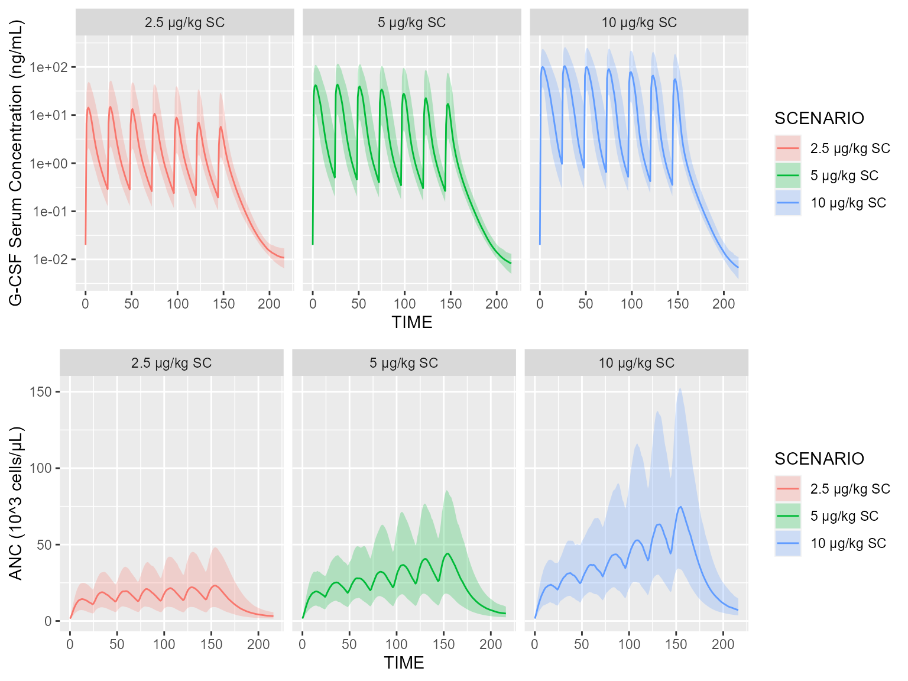
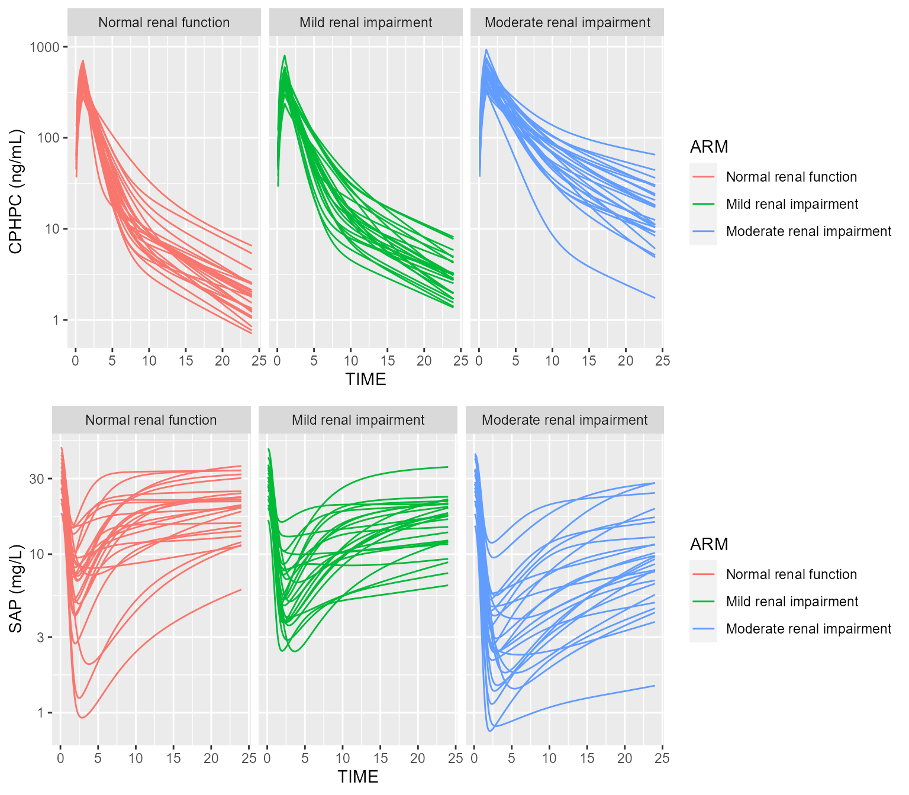

vignettes/v14_complex_pkpd_models.Rmd
v14_complex_pkpd_models.RmdThis vignette intends to demonstrate that CAMPSIS can be used to implement almost any PK/PD model, including complex ones.
Load the filgrastim PK/PD model from the model library as follows. Please note that this model was translated from NONMEM code. The original model file can be found here on the DDMORE repository.
pkpd <- model_library$filgrastim_pkpd_model
pkpd## [MAIN]
## FF=THETA_FF
## KA=THETA_KA1*exp(ETA_KA1)
## FR=THETA_FR
## D2=THETA_D2
## KEL=THETA_KEL*exp(ETA_KEL)
## VD=THETA_VD*exp(ETA_VD)
## KD=THETA_KD
## KINT=THETA_KINT
## KSI=THETA_KSI*exp(ETA_KSI)
## KOFF=THETA_KOFF
## KMT=THETA_KMT
## KBB1=THETA_KBB1
## KTT=THETA_KTT
## NB0=THETA_NB0*exp(ETA_NB0)
## SC1=THETA_SC1*exp(ETA_SC1)
## SM1=THETA_SM1*exp(ETA_SM1)
## SM2=THETA_SM2*exp(ETA_SM2)
## SM3=THETA_SM3
## CP0=BAS
## F1=FF
## F2=0
## if (ROUT == 1) F1=0
## if (ROUT == 1) F2=1
## KON=KOFF/KD
## H10=CP0*SM1/(CP0 + SC1) + 1
## H20=CP0*SM2/(CP0 + SC1) + 1
## H30=CP0*SM3/(CP0 + SC1) + 1
## KINB=KMT*NB0/H10
## BM10=H10*KINB/(H20*KTT + H30*KBB1)
## BM20=BM10*H20*KTT/(H20*KTT + H30*KBB1)
## BM30=BM20*H20*KTT/(H20*KTT + H30*KBB1)
## BM40=BM30*H20*KTT/(H20*KTT + H30*KBB1)
## BM50=BM40*H20*KTT/(H20*KTT + H30*KBB1)
## BM60=BM50*H20*KTT/(H20*KTT + H30*KBB1)
## BM70=BM60*H20*KTT/(H20*KTT + H30*KBB1)
## BM80=BM70*H20*KTT/(H20*KTT + H30*KBB1)
## BM90=BM80*H20*KTT/(H20*KTT + H30*KBB1)
## NT0=BM10 + BM20 + BM30 + BM40 + BM50 + BM60 + BM70 + BM80 + BM90 + NB0
## AC0=CP0*VD
## RTOT0=KSI*NT0
## ADR0=AC0*RTOT0/(CP0 + KD)
## KIN=AC0*KEL + ADR0*KINT
##
## [ODE]
## ABS=A_1
## ATOT=A_2
## BM1=A_5
## BM2=A_6
## BM3=A_7
## BM4=A_8
## BM5=A_9
## BM6=A_10
## BM7=A_11
## BM8=A_12
## BM9=A_13
## NB=A_14
## NT=BM1 + BM2 + BM3 + BM4 + BM5 + BM6 + BM7 + BM8 + BM9 + NB
## RTOT=KSI*NT
## BB=-A_2/VD + KD + RTOT
## CP=-0.5*BB + 0.5*sqrt(4*A_2*KD/VD + pow(BB, 2))
## AC=CP*VD
## ADR=AC*RTOT/(CP + KD)
## H1=CP*SM1/(CP + SC1) + 1
## H2=CP*SM2/(CP + SC1) + 1
## H3=CP*SM3/(CP + SC1) + 1
## d/dt(A_1)=-ABS*KA
## d/dt(A_2)=ABS*KA - AC*KEL - ADR*KINT + KIN
## d/dt(A_3)=0
## d/dt(A_4)=0
## d/dt(A_5)=-BM1*H2*KTT - BM1*H3*KBB1 + BM1*H1*KINB/BM10
## d/dt(A_6)=BM1*H2*KTT - BM2*H2*KTT - BM2*H3*KBB1
## d/dt(A_7)=BM2*H2*KTT - BM3*H2*KTT - BM3*H3*KBB1
## d/dt(A_8)=BM3*H2*KTT - BM4*H2*KTT - BM4*H3*KBB1
## d/dt(A_9)=BM4*H2*KTT - BM5*H2*KTT - BM5*H3*KBB1
## d/dt(A_10)=BM5*H2*KTT - BM6*H2*KTT - BM6*H3*KBB1
## d/dt(A_11)=BM6*H2*KTT - BM7*H2*KTT - BM7*H3*KBB1
## d/dt(A_12)=BM7*H2*KTT - BM8*H2*KTT - BM8*H3*KBB1
## d/dt(A_13)=BM8*H2*KTT - BM9*H2*KTT - BM9*H3*KBB1
## d/dt(A_14)=BM9*H2*KTT + H3*KBB1*(BM1 + BM2 + BM3 + BM4 + BM5 + BM6 + BM7 + BM8 + BM9) - KMT*NB
##
## [F]
## A_1=F1
## A_2=F2
##
## [DURATION]
## A_2=D2
##
## [INIT]
## A_1=0
## A_2=AC0 + ADR0
## A_3=0
## A_4=0
## A_5=BM10
## A_6=BM20
## A_7=BM30
## A_8=BM40
## A_9=BM50
## A_10=BM60
## A_11=BM70
## A_12=BM80
## A_13=BM90
## A_14=NB0
##
## [ERROR]
## ZNB=A_14
## ZNT=A_10 + A_11 + A_12 + A_13 + A_14 + A_5 + A_6 + A_7 + A_8 + A_9
## RRTOT=KSI*ZNT
## BBB=-A_2/VD + KD + RRTOT
## ZCP=-0.5*BBB + 0.5*sqrt(4*A_2*KD/VD + pow(BBB, 2))
##
##
## THETA's:
## name index value fix
## 1 FF 1 0.66600 FALSE
## 2 KA1 2 0.51200 FALSE
## 3 FR 3 1.00000 TRUE
## 4 D2 4 6.77000 TRUE
## 5 KEL 5 0.21200 FALSE
## 6 VD 6 2.98000 FALSE
## 7 KD 7 0.10400 FALSE
## 8 KINT 8 0.09030 FALSE
## 9 KSI 9 0.02200 FALSE
## 10 KOFF 10 0.00000 TRUE
## 11 KMT 11 0.07500 FALSE
## 12 KBB1 12 0.00000 TRUE
## 13 KTT 13 0.00421 FALSE
## 14 NB0 14 2.07000 FALSE
## 15 SC1 15 1.86000 FALSE
## 16 SM1 16 28.50000 FALSE
## 17 SM2 17 19.80000 FALSE
## 18 SM3 18 0.00000 TRUE
## OMEGA's:
## name index index2 value fix type same
## 1 NB0 1 1 0.0869 FALSE var NA
## 2 KEL 2 2 0.0100 FALSE var NA
## 3 VD 3 3 0.0100 FALSE var NA
## 4 KA1 4 4 0.0000 TRUE var NA
## 5 KSI 5 5 0.0100 FALSE var NA
## 6 SC1 6 6 0.0100 FALSE var NA
## 7 SM1 7 7 0.0100 FALSE var NA
## 8 SM2 8 8 0.0000 TRUE var NA
## SIGMA's:
## # A tibble: 0 x 0
## No variance-covariance matrix
##
## Compartments:
## A_1 (CMT=1)
## A_2 (CMT=2)
## A_3 (CMT=3)
## A_4 (CMT=4)
## A_5 (CMT=5)
## A_6 (CMT=6)
## A_7 (CMT=7)
## A_8 (CMT=8)
## A_9 (CMT=9)
## A_10 (CMT=10)
## A_11 (CMT=11)
## A_12 (CMT=12)
## A_13 (CMT=13)
## A_14 (CMT=14)Let’s create a fictive cohort of 25 subjects receiving filgrastim 10 μg/kg for a week following subcutaneous administration.
dataset <- Dataset(25) %>%
add(Bolus(time=0, amount=10, compartment=1, ii=24, addl=6)) %>%
add(Infusion(time=0, amount=10, compartment=2, ii=24, addl=6)) %>%
add(Observations(times=0:168)) %>%
add(Covariate("ROUT", 0)) %>%
add(Covariate("BAS", 0.02)) %>%
add(Covariate("WT", UniformDistribution(60,80))) %>%
add(DoseAdaptation("WT*AMT"))A quick simulation gives us the plasma concentration of filgrastim, as well as the absolute neutrophil count (ANC):
results <- pkpd %>% simulate(dataset=dataset, seed=1)
p1 <- spaghettiPlot(results, "ZCP") + ggplot2::ylab("G-CSF Serum Concentration (ng/mL)")
p2 <- spaghettiPlot(results, "ZNB") + ggplot2::ylab("ANC (10^3 cells/μL)")
gridExtra::grid.arrange(p1, p2, ncol=1)
Load the target mediated drug disposition Model of CPHPC from the model library as follows. Please note that this model was translated from NONMEM code. The original model file can be found here on the DDMORE repository.
pkpd <- model_library$cphpc_pkpd_model
pkpd## [MAIN]
## MOLSAP=125000000
## MOLCPH=340370.0
## THRESH=80
## CRCL2=CRCL
## if (CRCL > THRESH) CRCL2=THRESH
## CRCLEFF=THETA_CRCLCOV*(CRCL2 - THRESH) + 1
## TVCL=CRCLEFF*exp(THETA_CL)
## MU_2=log(TVCL)
## CL=exp(ETA_CL + MU_2)
## TVV=exp(THETA_V)
## MU_3=log(TVV)
## V=exp(ETA_V + MU_3)
## TVQ=exp(THETA_Q)
## MU_4=log(TVQ)
## Q=exp(ETA_Q + MU_4)
## TVV2=exp(THETA_V2)
## MU_5=log(TVV2)
## V2=exp(ETA_V2 + MU_5)
## TVK12=Q/V
## K12=TVK12
## TVK21=Q/V2
## K21=TVK21
## K10=CL/V
## TVV3=V
## V3=TVV3
## TVV4=exp(THETA_V4)
## MU_10=log(TVV4)
## V4=exp(ETA_V4 + MU_10)
## TVSAP10=exp(THETA_SAP10)
## MU_6=log(TVSAP10)
## SAP10=exp(ETA_SAP10 + MU_6)
## TVKOUT=exp(THETA_KOUT)
## MU_1=log(TVKOUT)
## KOUT=exp(ETA_KOUT + MU_1)
## TVKON=exp(THETA_KON)
## MU_7=log(TVKON)
## KON=exp(ETA_KON + MU_7)
## KD=1.0/100000000.0
## TVKOFF=KD*TVKON
## KOFF=TVKOFF
## TVKINT=THETA_KINT
## MU_8=log(TVKINT)
## KINT=exp(ETA_KINT + MU_8)
## TVQ4=exp(THETA_Q4)
## MU_9=log(TVQ4)
## Q4=exp(ETA_Q4 + MU_9)
## TVK34=Q4/V3
## K34=TVK34
## TVK43=Q4/V4
## K43=TVK43
## KIN=KOUT*SAP10*V3
## AM3=SAP10/MOLSAP
## AM4=SAP10/MOLSAP
## F1=1
## F5=THETA_FSC
## TVKSC=exp(THETA_KASC)
## MU_11=log(TVKSC)
## KSC=exp(ETA_KSC + MU_11)
## S1=(1.0/1000.0)*V
## S3=(1.0/1000.0)/MOLSAP
##
## [ODE]
## A1=A_1
## A3=A_3
## A2=A_2
## A4=A_4
## A5=A_5
## A6=A_6
## C1=A1/(MOLCPH*V)
## C3=A3
## C3C1=A6
## C3C1_STD=C3C1*MOLCPH*V3
## A1F=A1 - C3C1_STD
## C3F=C3 - C3C1
## C1F=A1F/(MOLCPH*V)
## DADT1=-A1F*K10 - A1F*K12 + A2*K21 + A5*KSC - C3C1*KINT*MOLCPH*V
## DADT2=A1F*K12 - A2*K21
## DADT3=A4*K43*V4/V3 - C3C1*KINT - C3F*K34 - C3F*KOUT + KIN/(MOLSAP*V3)
## DADT4=-A4*K43 + C3F*K34*V3/V4
## DADT5=-A5*KSC
## DADT6=C1F*C3F*KON - C3C1*KINT
## d/dt(A_1)=DADT1
## d/dt(A_2)=DADT2
## d/dt(A_3)=DADT3
## d/dt(A_4)=DADT4
## d/dt(A_5)=DADT5
## d/dt(A_6)=DADT6
##
## [F]
## A_1=F1
## A_5=F5
##
## [INIT]
## A_3=AM3
## A_4=AM4
##
##
## THETA's:
## name index value fix
## 1 KOUT 1 -3.0700 FALSE
## 2 CL 2 1.9200 FALSE
## 3 V 3 2.7600 FALSE
## 4 Q 4 0.5950 FALSE
## 5 V2 5 2.8400 FALSE
## 6 SAP10 6 3.3700 FALSE
## 7 KON 7 14.6000 FALSE
## 8 KINT 8 5.7100 FALSE
## 9 PROPPK 9 0.2860 FALSE
## 10 ADDPK 10 0.0000 TRUE
## 11 PROPSAP 11 0.2680 FALSE
## 12 ADDSAP 12 0.0000 TRUE
## 13 FSC 13 1.0000 TRUE
## 14 KASC 14 0.4055 TRUE
## 15 CRCLCOV 15 0.0152 FALSE
## 16 V4 16 3.4700 FALSE
## 17 Q4 17 1.4900 FALSE
## OMEGA's:
## name index index2 value fix type same
## 1 KOUT 1 1 0.1250 FALSE var NA
## 2 CL 2 2 0.0474 FALSE var NA
## 3 V 3 3 0.0836 FALSE var NA
## 4 Q 4 4 0.0225 TRUE var NA
## 5 V2 5 5 0.0225 TRUE var NA
## 6 SAP10 6 6 0.0625 FALSE var NA
## 7 KON 7 7 0.0225 TRUE var NA
## 8 KINT 8 8 0.0225 TRUE var NA
## 9 Q4 9 9 1.1100 FALSE var NA
## 10 V4 10 10 2.0500 FALSE var NA
## 11 KSC 11 11 0.0225 TRUE var NA
## SIGMA's:
## name index index2 value fix type
## 1 <NA> 1 1 1 TRUE var
## 2 <NA> 2 2 1 TRUE var
## No variance-covariance matrix
##
## Compartments:
## A_1 (CMT=1)
## A_2 (CMT=2)
## A_3 (CMT=3)
## A_4 (CMT=4)
## A_5 (CMT=5)
## A_6 (CMT=6)Let’s create 3 fictive cohorts of 25 subjects each, all receiving a 1-hour infusion of 10 mg CPHPC.
arm <- Arm(subjects=25) %>%
add(Infusion(time=0, amount=10, duration=1)) %>%
add(Observations(times=seq(0.1,24,by=0.1)))
arm1 <- arm %>% add(Covariate("CRCL", UniformDistribution(80,120))) %>% setLabel("Normal renal function")
arm2 <- arm %>% add(Covariate("CRCL", UniformDistribution(50,80))) %>% setLabel("Mild renal impairment")
arm3 <- arm %>% add(Covariate("CRCL", UniformDistribution(30,50))) %>% setLabel("Moderate renal impairment")
dataset <- Dataset() %>% add(c(arm1, arm2, arm3)) A quick simulation gives us the concentration of CPHPC over 24 hours, as well as the concentration in serum amyloid P (SAP), for each cohort:
results <- pkpd %>% simulate(dataset=dataset, seed=1)
# Reorder ARM labels
results <- results %>% dplyr::mutate(ARM=factor(ARM, levels=c("Normal renal function", "Mild renal impairment", "Moderate renal impairment")))
# Unit conversion
results <- results %>% dplyr::mutate(C1=C1*340.37*1e6, C3=C3*5*25000*1e3)
p1 <- spaghettiPlot(results, "C1", "ARM") + ggplot2::ylab("CPHPC (ng/mL)") + ggplot2::scale_y_log10() + ggplot2::facet_wrap(~ARM)
p2 <- spaghettiPlot(results, "C3", "ARM") + ggplot2::ylab("SAP (mg/L)") + ggplot2::scale_y_log10() + ggplot2::facet_wrap(~ARM)
gridExtra::grid.arrange(p1, p2, ncol=1)